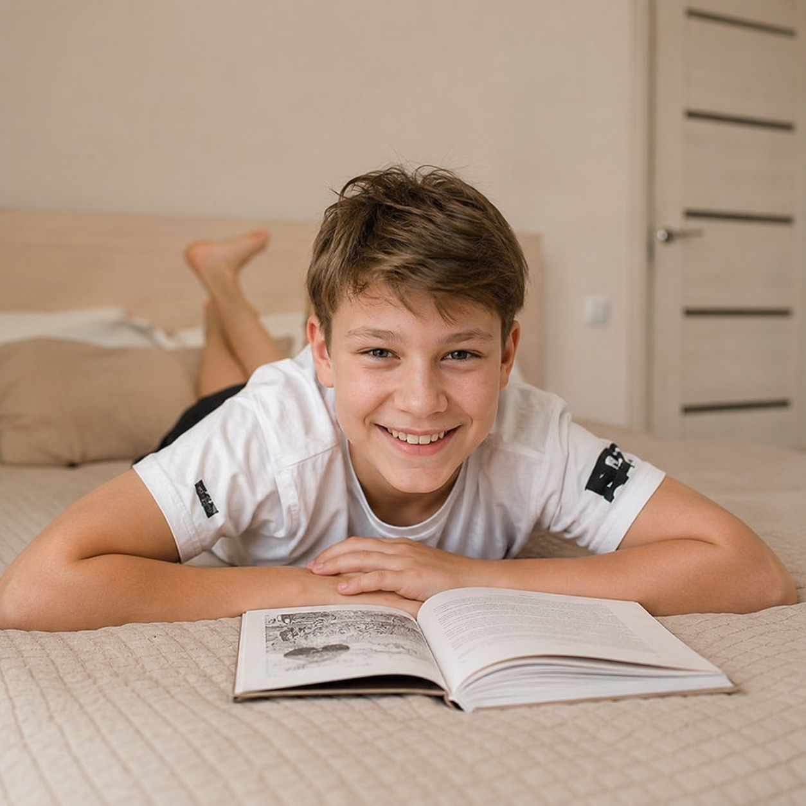
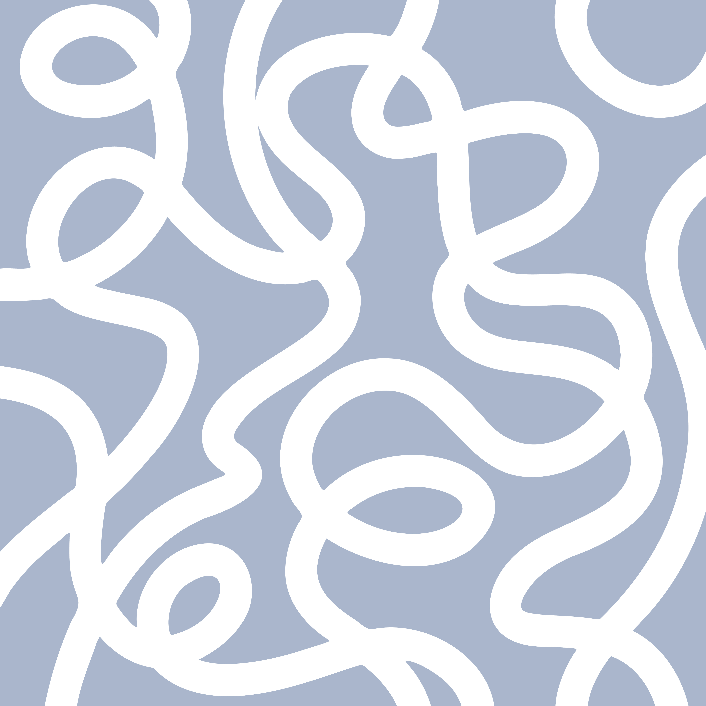

Учим через игру
Каждое занятие построено как квест: квизы, обсуждения любимых героев, поиск ответов на вопросы, как у настоящих детективов. Ребёнок учится незаметно — потому что ему интересно.
Отвлечём ребёнка от соцсетей, поможем раскрыть таланты и полюбить книги с помощью уникальной методологии онлайн-школы Matrius по скорочтению.

Каждое занятие построено как квест: квизы, обсуждения любимых героев, поиск ответов на вопросы, как у настоящих детективов. Ребёнок учится незаметно — потому что ему интересно.
Никакой зубрёжки — только актуальные навыки для современных детей: скорочтение, концентрация, работа с информацией.
Они знают, как увлечь детей и объяснить сложное простыми словами. Каждый педагог проходит трёхступенчатый отбор и работает только по нашей методике.
Можно не волноваться, где ребёнок находится во время каникул — занятия идут онлайн, под присмотром педагога.
Не нагружаем ребёнка после учебного года, а помогаем развиваться в интересной форме.
За лето мозг не «обнуляется» — мышление, чтение и словарь остаются в работе. К сентябрю ребёнок не теряет, а прибавляет.
7 направлений работы за лето: что мы будем тренировать с ребёнком — и какой результат вы увидите.
Ребёнок осваивает чтение глазами без проговаривания про себя. Это база, на которой держится вся учёба: чем быстрее он читает, тем легче понимает учебники и тем меньше устаёт от любых текстов.

Работа со смыслом: пересказ, обсуждение, поиск ключевых идей в больших текстах. Без этого навыка скорость превращается в «пробежал глазами» — а нам важно, чтобы ребёнок реально понимал, что читает.
Тренировки удержания внимания и фокуса. В мире, где ребёнок переключается между видео каждые 30 секунд, концентрация становится главным преимуществом в школе и жизни.
Техники запоминания стихов, дат и фактов через образное мышление и ассоциации. Хорошая память — это не врождённое: её можно прокачать так же, как мышцу. Пригодится не только летом — на всю жизнь.

Расширение лексики через художественные тексты, синонимы и обсуждения с педагогом. Богатый словарь = ребёнок понимает учителя с полуслова, не путается в учебниках и уверенно отвечает у доски.
Ребёнок проходит школьный летний список вместе с педагогом и другими детьми. Это не «надо прочитать» — это живые обсуждения с теми, кто читает то же самое. Так из обязанности рождается удовольствие.
Внутри книжного клуба ребёнок знакомится со сверстниками с похожими интересами. Дружба на почве общих книг и обсуждений — самая крепкая. Уйдёт стеснение, появится круг общения по-настоящему «своих».
Главный навык, который останется с ребёнком на всю жизнь
Это вершина всей программы и её главный результат. Учим ребёнка работать с информацией без постоянных подсказок: искать ключевое, выделять главное, выстраивать ответ своими словами. Тренируем привычку дочитывать до конца, задавать вопросы и не сдаваться на сложном — то, чего не успевают научить за партой со звонком. К концу лета у ребёнка появляется главное качество успешного человека: он умеет учиться сам и не ждёт, пока ему всё разжуют.
Программа построена через игру: квесты, обсуждения любимых героев, соревнования с собой. Ребёнок учится незаметно — и у него остаётся время на лето.
Упражнения работают с обоими полушариями — скорость растёт вместе с пониманием, а не вместо него.
Программа адаптируется под ребёнка: возраст, стартовый уровень, любимые жанры.
Каждое занятие — квест по тексту и обсуждение любимых героев. Ребёнок не «отбывает» урок.
Никаких «двоек за ошибки». Ребёнок не боится пробовать — и потому быстрее учится.
Педагог встречается с ребёнком онлайн, узнаёт его интересы и любимые книги — и строит урок именно под него.
Замер стартовой скорости чтения, понимания текста и концентрации. У логопеда такое обследование стоит от 1500 ₽.
Ребёнок пробует методику Matrius прямо на уроке и видит первый результат уже через 30 минут.
Педагог объясняет родителю, что и как делать летом, чтобы ребёнок и отдохнул, и не потерял школьные знания.
Регулярные тренировки по 10 минут в день дают результат уже через месяц — без скучных длинных занятий.
Ребёнок научится удерживать внимание 30+ минут на одной задаче — даже когда рядом лежит телефон.
90 дней структурированной привычки читать. Место для эмоций, выводов, любимых цитат. Ребёнок видит, как растёт его «личная библиотека лета».
Недавно нашей школе исполнилось 7 лет — и за это время мы довели нашу систему обучения до идеала.
Образовательная платформа с тренажёрами и персонажами, которые помогают ребёнку включиться в обучение через игру.
Мы знаем, что все дети отличаются — и понимаем, как важно подобрать преподавателя, с которым ребёнку захочется учиться.
Наша школа — официальный резидент «Сколково». Это подтверждает уровень нашей экспертизы и качества методики.
Отвлечём ребёнка от соцсетей, поможем раскрыть таланты и полюбить книги с помощью уникальной методологии онлайн-школы Matrius по скорочтению.